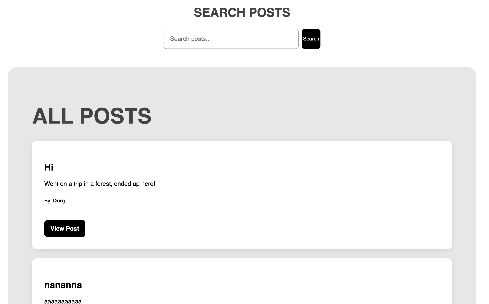

CSS Frameworks

Project Overview
This project was completed as part of the CSS Frameworks course at Noroff. The assignment focused on using a CSS framework to improve an existing project and create a more responsive and visually consistent user experience.
I used Tailwind CSS to redesign and improve selected pages from my Social Media application. The goal was to learn how to work with a utility-first CSS framework while improving layout, responsiveness and overall visual presentation.
Assignment Requirements
The assignment required students to apply a CSS framework to an existing project and improve the user interface using responsive design principles.
As part of the assignment I:
- Installed and configured Tailwind CSS
- Styled the login page using Tailwind CSS
- Styled the registration page using Tailwind CSS
- Added Tailwind classes to dynamic content rendered through JavaScript
- Improved responsiveness across multiple screen sizes
- Cleaned up and organized the HTML structure
What I Learned
Through this project I learned how to use Tailwind CSS to create layouts and components more efficiently. I also gained experience with responsive design, spacing systems and utility-based styling.
The project helped me understand how a CSS framework can speed up development while maintaining consistency across an application.
Portfolio Improvements
For Portfolio 2, I reviewed the project and made additional improvements to prepare it for professional presentation.
- Improved the styling of the Feed page
- Redesigned the Profile page layout
- Improved the Create Post page styling
- Added better spacing and visual hierarchy
- Improved card layouts and button styling
- Reviewed responsiveness and user experience
- Updated the README documentation